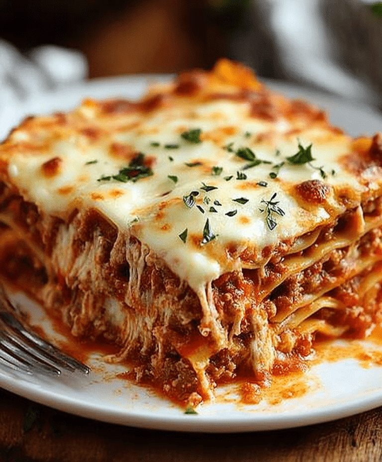

Lasagna

Description
Classic lasagna layers sheets of pasta with a rich meat-tomato sauce (typically ground beef or a mix of beef and pork simmered with onion, garlic, and herbs), creamy ricotta mixed with egg and Parmesan, and plenty of shredded mozzarella; assemble by alternating sauce, pasta, and cheese layers in a baking dish, top with extra mozzarella and Parmesan, then bake until bubbly and golden — rest 10–15 minutes before slicing so the layers set.
Ingredients
- 12 lasagna noodles (or 9–12 no-boil lasagna sheets)
- 1 lb (450 g) ground beef (or mixture of beef and pork)
- 1 small onion, finely chopped
- 2–3 cloves garlic, minced
- 24 oz (680 g) crushed tomatoes or marinara sauce
- 2 tbsp tomato paste (optional, for richness)
- 1 tsp dried oregano
- 1 tsp dried basil
- Salt and black pepper, to taste
- 15 oz (425 g) ricotta cheese
- 1 large egg
- 1/2 cup (50 g) grated Parmesan cheese, divided
- 2 cups (200–250 g) shredded mozzarella cheese, divided
- 2 tbsp olive oil (for sautéing)
- Fresh basil or parsley for garnish (optional)
Steps
- Preheat oven to 375°F (190°C).
- Cook lasagna noodles according to package instructions until al dente; drain and lay flat on a sheet to prevent sticking (skip if using no-boil noodles).
- Heat olive oil in a skillet over medium heat; sauté chopped onion until translucent, then add garlic and cook 30 seconds.
- Add ground meat, breaking it up; cook until browned and cooked through. Season with salt, pepper, oregano, and basil.
- Stir in crushed tomatoes and tomato paste; simmer 10–15 minutes to thicken and blend flavors.
- In a bowl, combine ricotta, egg, half the Parmesan, and a pinch of salt and pepper.
- Spread a thin layer of meat sauce in the bottom of a 9x13-inch baking dish.
- Place a layer of noodles over the sauce, then spread some ricotta mixture, sprinkle with mozzarella, and spoon more meat sauce; repeat layers (typically 3 layers), finishing with sauce on top.
- Sprinkle remaining mozzarella and Parmesan over the top.
- Cover loosely with foil and bake 25 minutes; remove foil and bake another 15–20 minutes until bubbly and golden.
- Let rest 10–15 minutes before slicing and garnish with fresh basil or parsley if desired.
Home